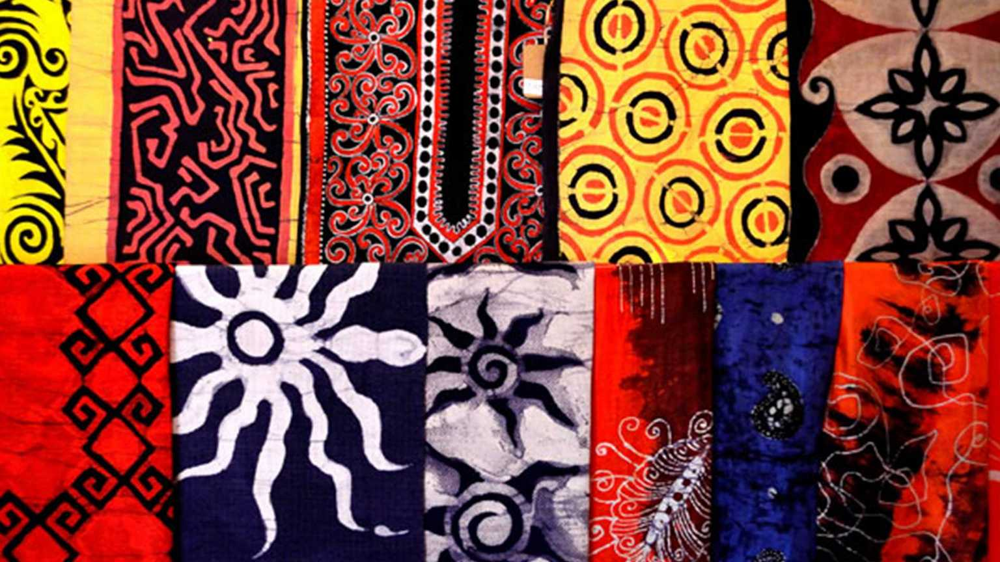
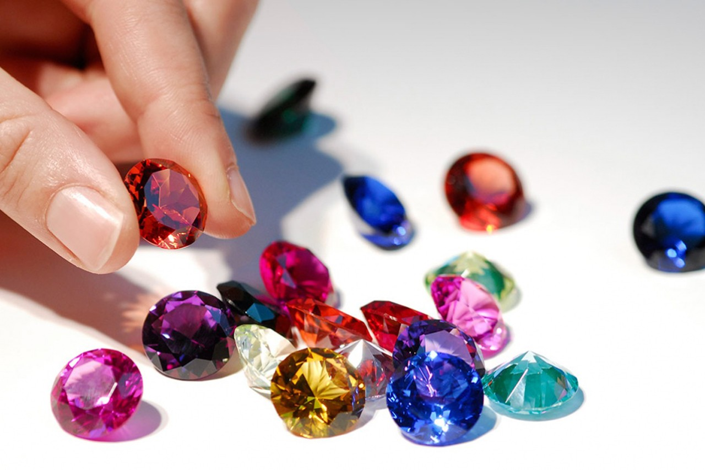

Mask making is a long-standing tradition in Sri Lanka.
Ambalangoda, a coastal town in the country's south, is famous for its wooden mask industry.
Having said that, you can find handmade masks virtually anywhere else in the country.
These hand-carved and hand-painted colorful masks are associated with ancient Sri Lankan rituals and devil dances.
Masks come in a variety of styles, each with its own function.
Visiting an actual mask workshop is the best way to learn about their history and what each of them represents.

BATIK WEARS
The art of batik, which originated in Indonesia, was introduced to Sri Lanka at the end of the nineteenth century.
Batik is a method of dying fabrics with wax and ink. This technique can be used on both clothing and wall hangings.
If you ride across, you'll see local men wearing batik sarongs and women wearing rainbow-colored batik sarees.
Every Sri Lankan batik garment is handcrafted, from the waxing to the dying. And no two designs are alike.
As a result, it's reasonable to assume that batik is Sri Lanka's equivalent of haute couture.
Before you buy, it's a good idea to watch a short demonstration of how batik is made.
As a result, try to include a batik workshop, such as Henry Batiks in Dambulla, on your itinerary.

GEMS
Sri Lanka has been dubbed "The Gem Island" throughout its history.
The country is well-known around the world for the exceptional quality and diversity of gemstones it produces.
In Sri Lanka, local gemstone jewelry is available at relatively inexpensive pricing.
If you're looking for a trustworthy shop to buy gems in Sri Lanka, look no further.
You can be sure that anything you're getting is of the finest quality this way.
Sarees
Sri Lankan women wear the traditional saree on a variety of occasions.
During evening events at luxury hotels, for example, we saw many ladies looking stunning in their colorful silk sarees.
But there were also women in Sri Lanka who wore sarees to go grocery shopping or to pray at the temple, which we admired.
In every town in Sri Lanka, you can easily find a saree for less than $10/€10.
However, if you want to try one on before purchasing, go to a posh showroom.
Sarees are more expensive there, but they are made of high-quality silk.